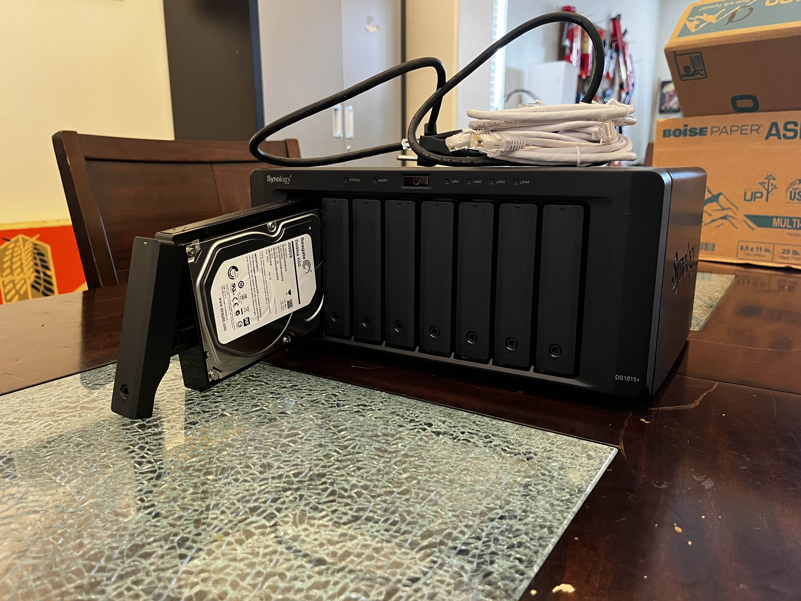

I was looking around on Facebook Marketplace for some old hard drives to expand my home server storage. I came across a post for a Synology NAS with a description explaining that the NAS was not working and just had some blinking lights. The owner was selling it for $300, which included 4x 4TB hard drives. With an offer like that, I couldn't say no. So I bought the NAS and took it home to diagnose and fix it.
During this project, I learned how to diagnose hardware issues by looking through the manual and identifying what the blinking lights meant. I also learned about different components on the motherboard as I wanted to be able to properly identify and replace the faulty parts. I also learned how to use a soldering iron, soldering wick, and multimeter to diagnose, repair, and replace components. Overall, this was an incredibly fun and educational project that taught me a lot about hardware repair.